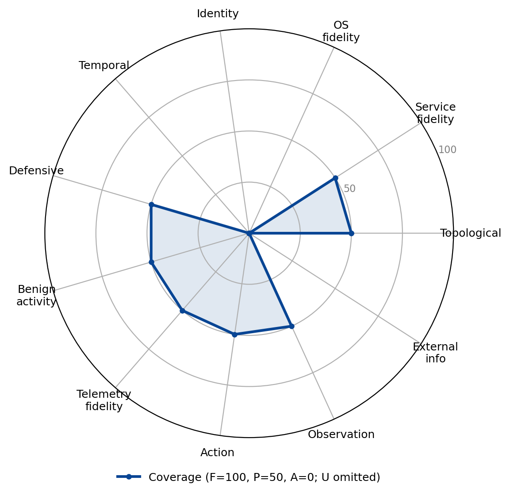

CAGE-2
Family: Abstract simulator · Category: A

The CAGE-2 autonomous-defence scenario (built on CybORG); an abstract host/service model with a single discovery-only 'green' agent providing minimal benign activity.
Best suited for: Network architecture attack-path analysis, Operating against agent-targeted deception.
Dimension coverage
| Dimension | Coverage |
|---|---|
| Topological realism | Partial |
| Service fidelity | Partial |
| OS fidelity | Absent |
| Identity realism | Absent |
| Temporal dynamics | Absent |
| Defensive realism | Partial |
| Benign activity realism | Partial |
| Telemetry fidelity | Partial |
| Action realism | Partial |
| Observation realism | Partial |
| External information ecosystem | Absent |
Fit by objective
Suitability is a property of the (environment, objective) pair; a “not suitable” verdict names the dimension the objective needs that this environment abstracts.
| Objective | Verdict | Why |
|---|---|---|
| Targeted data exfiltration | Not suitable | does not provide Temporal dynamics, External information ecosystem, dimensions this objective treats as critical |
| Ransomware deployment | Not suitable | does not provide OS fidelity, Temporal dynamics, dimensions this objective treats as critical |
| Worm / self-propagation | Not suitable | does not provide Temporal dynamics, a dimension this objective treats as critical |
| Credential-based privilege escalation | Not suitable | does not provide OS fidelity, Identity realism, dimensions this objective treats as critical |
| Evasive red-team operation | Not suitable | does not provide OS fidelity, Identity realism, Temporal dynamics, dimensions this objective treats as critical |
| Alert triage | Not suitable | does not provide Temporal dynamics, a dimension this objective treats as critical |
| Incident response | Not suitable | does not provide Identity realism, Temporal dynamics, dimensions this objective treats as critical |
| Threat hunting | Not suitable | does not provide Identity realism, Temporal dynamics, dimensions this objective treats as critical |
| Attacker-defender simulation | Not suitable | does not provide Identity realism, Temporal dynamics, dimensions this objective treats as critical |
| Network architecture attack-path analysis | Partial fit | covers the required dimensions, but below the fit threshold |
| Cognitive resilience under adversarial content | Not suitable | does not provide Temporal dynamics, a dimension this objective treats as critical |
| Operating against agent-targeted deception | Partial fit | covers the required dimensions, but below the fit threshold |
Sub-dimension coverage (all 122 sub-dimensions)
This environment has been assessed at the sub-dimension level, with a recorded reason for every grade. The fit table above is computed at the dimension level, because most environments have not yet been assessed this finely and the two levels are not directly comparable.
Evidence: notes/src/environments.md CAGE-2 section; element-level grades from the 2026-10-12 Claude + Codex dual extraction, reconciled under the structural-property and strict agent-exposure rules (blue defender as the agent under evaluation)
Topological realism: 0 full, 2 partial, 8 absent
| Sub-dimension | Coverage | Reason |
|---|---|---|
| D1.1 Multi-segment graph with enforced path behavior | Partial | Three subnets constrain red movement, and Blue can observe resulting host-level alerts and connections, but routing, ACLs, and policy changes are abstract and not Blue-configurable. |
| D1.2 Perimeter and egress asymmetry | Absent | Blue cannot observe or manipulate differentiated inbound, outbound, proxy, DNS-filtering, or egress paths; the initial foothold is simply pre-seeded. |
| D1.3 Network devices as manageable entities | Absent | No router, switch, or firewall is exposed to Blue as an observable or manageable entity. |
| D1.4 Layer 2/3 protocol fidelity | Absent | Blue has no access to ARP, DHCP, LLMNR, 802.1X, SMB-signing, or other packet-level L2/L3 behavior. |
| D1.5 Position-dependent traffic visibility | Absent | Blue receives monitoring from all modeled hosts independent of sensor position and cannot sniff, mirror, or reposition sensors. |
| D1.6 Lateral reachability and file transfer | Absent | not in the blue agent's observations or action set in CAGE-2 |
| D1.7 Discoverable (not given) topology | Absent | Blue receives a fixed host-indexed interface rather than discovering topology; Meander discovers hosts as Red, while B_line is given prior layout knowledge. |
| D1.8 Staging and exfil-path asymmetry | Absent | No staging or exfiltration action or differentiated external connectivity is exposed to Blue. |
| D1.9 Remote-access and cross-organizational boundaries | Absent | The environment exposes no VPN, jump-host, vendor, MSP, federation, or other cross-organizational boundary mechanism. |
| D1.10 Believable decoy placement | Partial | Blue can deliberately place service decoys on ordinary hosts in the three subnets, although placement plausibility is not evaluated at production fidelity. |
Service fidelity: 0 full, 2 partial, 12 absent
| Sub-dimension | Coverage | Reason |
|---|---|---|
| D2.1 Real, versioned, fingerprintable daemons | Absent | Named services are symbolic process and port models rather than real, versioned, protocol-conformant daemons that Blue can inspect. |
| D2.2 Exploitable vulnerable builds with heterogeneous patch state | Absent | Red uses named abstract exploit classes, but Blue cannot observe real builds, CVEs, exploit parameters, or heterogeneous patch levels. |
| D2.3 Web applications with real code paths and session stack | Absent | No real web application, code path, cookie, session stack, or federated web flow is exposed. |
| D2.4 Email infrastructure | Absent | A named SMTP process or decoy is not an end-to-end mail system, and Blue cannot access mailboxes, mail rules, or mail policy. |
| D2.5 DNS infrastructure | Absent | A nominal DNS-related host does not expose authoritative records, resolution behavior, TTLs, NXDOMAIN responses, or DNS logs to Blue. |
| D2.6 File shares and enterprise repositories | Absent | Blue cannot observe or act on file shares, repositories, ACL-governed content, wikis, or document libraries. |
| D2.7 Authentication-service and PKI surfaces | Absent | No authentication service, lockout policy, MFA service, password-hash surface, or certificate authority is exposed to Blue. |
| D2.8 Network-device management services | Absent | No SNMP, device CLI, or network-device configuration service is observable or actionable. |
| D2.9 Enterprise deployment and supply-chain services | Absent | No deployment platform, package registry, CI/CD pipeline, update service, or supply-chain trust relationship is modeled for Blue. |
| D2.10 Legitimate RMM and dual-use web services | Absent | Blue cannot install, observe, or control RMM tools, cloud storage, messaging APIs, or dual-use web services. |
| D2.11 Revocation-aware service state | Absent | There are no exposed credentials, tokens, sessions, or service caches whose behavior changes after revocation. |
| D2.12 Operational recovery surfaces | Partial | Blue can deliberately restore a host from a modeled known-good image at an availability cost, but recovery is a single abstract action without dependencies or workflow. |
| D2.13 Dependency-aware response effects | Absent | Blue cannot observe service dependency graphs or dependency-specific effects of restoration, removal, or isolation. |
| D2.14 Believable decoy service context | Partial | Blue can deploy named Apache, SSH, SMTP, Tomcat, and other service decoys, but they have no real protocol content, data, or business workflow. |
OS fidelity: 0 full, 1 partial, 7 absent
| Sub-dimension | Coverage | Reason |
|---|---|---|
| D3.1 Persistence surface | Absent | Persistence is only an abstract consequence of privileged red access; Blue cannot inspect or modify any actual persistence mechanism. |
| D3.2 Execution-flow control and scripting engines | Absent | No shell, scripting engine, loader behavior, allowlisting system, syscall control, or host firewall is exposed to Blue. |
| D3.3 Process, memory, and privilege-boundary primitives | Partial | Remove clears only user-level red; privileged red survives and requires Restore, an abstract privilege-boundary effect the agent must handle; no real process or memory primitives |
| D3.4 Configuration stores, filesystem semantics, and kernel/trust layer | Absent | Blue cannot inspect or manipulate real registry, filesystem, kernel, driver, code-signing, Secure Boot, or TPM state. |
| D3.5 Credential material exposure on the endpoint | Absent | No endpoint credential stores or harvestable LSASS, SAM, shadow, keyring, browser, SSH-key, or cloud-CLI artifacts are exposed to Blue. |
| D3.6 Discovery, evasion, and anti-forensics surface | Absent | Blue has no realistic host inventory, anti-analysis, hidden-object, log-clearing, history-clearing, or anti-forensics surface. |
| D3.7 Impact primitives and document-execution behavior | Absent | not in the blue agent's observations or action set in CAGE-2 |
| D3.8 Restorable host objects | Absent | not in the blue agent's observations or action set in CAGE-2 |
Identity realism: 0 full, 0 partial, 13 absent
| Sub-dimension | Coverage | Reason |
|---|---|---|
| D4.1 Populated directory and local identity stores | Absent | Any internal user labels are not exposed to Blue as an enumerable directory or local identity store. |
| D4.2 Credential landscape with realistic material in real locations | Absent | Blue cannot observe passwords, reused or default credentials, service-account secrets, or credentials accumulated in realistic locations. |
| D4.3 Kerberos and NTLM protocol fidelity | Absent | Kerberos, NTLM, relay, roasting, and poisonable name-resolution protocols are not exposed. |
| D4.4 Federation, SSO, and web session material | Absent | No SAML, OAuth, OIDC, JWT, web-cookie, API-token, or cross-tenant session material exists at Blue's interface. |
| D4.5 MFA as a design space and auth-process modification surface | Absent | Blue cannot observe or configure MFA factors, conditional access, user prompt behavior, or authentication-package modification. |
| D4.6 Account lifecycle and tiered administration | Absent | No account creation, disabling, reset, group change, administrative tier, LAPS, MSA, or gMSA operation is available. |
| D4.7 Session reality and valid-account usage | Absent | Blue cannot observe interactive, network, RDP, sudo, runas, or S4U sessions or their credential artifacts. |
| D4.8 Certificate and PKI identity | Absent | No certificate authority, certificate template, client-certificate authentication, issuance, renewal, or revocation surface is exposed. |
| D4.9 Enumeration and identity-relationship surface | Absent | Blue has no LDAP, directory-command, or BloodHound-like identity enumeration interface. |
| D4.10 Human-layer impersonation and external-to-internal bridges | Absent | The phishing foothold is pre-seeded; Blue cannot observe or interact with email impersonation, external identities, guests, vendors, or service principals. |
| D4.11 Policy-bound authorization as identity-layer state | Absent | No group-, claim-, role-, or conditional-policy-derived authorization state is visible or configurable. |
| D4.12 Propagating credential control and access recovery | Absent | Blue has no credential revocation, unlock, reissue, group restoration, or access-validation workflow. |
| D4.13 Believable deceptive identities | Absent | Blue can deploy service decoys but not believable decoy accounts, credentials, tokens, or personas. |
Temporal dynamics: 0 full, 0 partial, 11 absent
| Sub-dimension | Coverage | Reason |
|---|---|---|
| D5.1 Real wall-clock progression | Absent | Time advances in discrete turns, with no real wall clock, NTP behavior, uptime history, or fine-grained event timestamps exposed. |
| D5.2 Scheduled execution and reboot semantics | Absent | No scheduled tasks, timers, jitter, reboot execution, or persistence behavior across real reboot boundaries is available. |
| D5.3 Session, token, and credential lifetimes | Absent | No sessions, tickets, tokens, certificates, password ages, or lockout counters expire according to elapsed time. |
| D5.4 Human activity rhythms | Absent | The discovery-only Green agent has no business hours, weekends, holidays, shifts, or human response timing. |
| D5.5 Long-horizon engagement support | Absent | Episodes last a fixed 30, 50, or 100 turns rather than weeks or months, with no patch drift or long-term log accumulation. |
| D5.6 Event-correlation windows and rate-limiting | Absent | No real-time correlation window, retention window, account lockout, API rate limit, or connection-rate cap is exposed. |
| D5.7 Delay-based evasion and staged operations | Absent | Blue cannot schedule delays, observe sleeping execution, or conduct staged operations governed by real inter-stage time. |
| D5.8 State decay and temporal detection signals | Absent | No cache TTLs, log rotation, shadow-copy aging, certificate expiry, or clock-based anomaly signals are modeled for Blue. |
| D5.9 Non-instant defender effects with observable before/after | Absent | Blue actions resolve within a turn rather than rolling out over time with observable intermediate states. |
| D5.10 Retained containment and recovery history | Absent | The interface may retain coarse prior-attack indicators, but it exposes no durable timeline of isolation, restore, rollback, or account-recovery changes. |
| D5.11 Triggered and delayed activation of injected content | Absent | No agent-ingested content or injected instruction can remain dormant pending a timer or in-environment trigger. |
Defensive realism: 0 full, 1 partial, 11 absent
| Sub-dimension | Coverage | Reason |
|---|---|---|
| D6.1 Perimeter, egress, and traffic inspection | Absent | Static simulated reachability is not exposed as a Blue-operated firewall, WAF, IPS, proxy, DNS filter, CASB, or rate limiter. |
| D6.2 Email security stack | Absent | No mail gateway, attachment sandbox, URL detonation, mailbox audit, or anomalous-sending detector exists. |
| D6.3 Endpoint protection, EDR, and exploit mitigations | Absent | not in the blue agent's observations or action set in CAGE-2 |
| D6.4 Application-execution controls | Absent | No application allowlisting, script restriction, macro policy, SmartScreen, Gatekeeper, or comparable execution control is available. |
| D6.5 Authentication hardening | Absent | Blue cannot configure lockout, MFA, NTLM restriction, SMB signing, LDAP binding, Kerberos-only enforcement, or federation hardening. |
| D6.6 Patching and configuration hardening | Absent | Original CAGE-2 exposes no Blue patch or configuration-hardening action and no observable heterogeneous patch lifecycle. |
| D6.7 Segmentation enforcement | Absent | Blue cannot inspect, tighten, log, or otherwise operate segmentation controls; isolation actions belong to later CAGE scenarios, not CAGE-2. |
| D6.8 Detection rule library and cloud-plane controls | Absent | Alerts are simulator outputs rather than a tunable detection-rule library, and no cloud IAM or posture-control plane exists. |
| D6.9 Data-loss prevention controls | Absent | No endpoint, email, web, or cloud DLP inspection or response is exposed. |
| D6.10 Response, deception, and control-configuration action space | Partial | Blue has distinct Analyse, Remove, Restore, and service-decoy actions with imperfect removal and explicit restore cost, but no tunable controls or rollout process. |
| D6.11 ML-based defenses, modeled and evadable | Absent | No ML-based malware, anomaly, or content detector is exposed as an evadable defensive component. |
| D6.12 Cognition-targeted deception | Absent | Service decoys target Red's exploit selection, not a reading agent's reasoning or interpretation of content. |
Benign activity realism: 0 full, 1 partial, 9 absent
| Sub-dimension | Coverage | Reason |
|---|---|---|
| D7.1 Simulated users with role and behavioral diversity | Absent | The Green agent only performs discovery and exposes no role, persona, workforce, application-profile, or behavioral diversity to Blue. |
| D7.2 User interactive input and active sessions | Absent | No keyboard, mouse, clipboard, screen, active-window, console, RDP, or SSH user session is generated. |
| D7.3 Browsing, document authorship, and accumulated web state | Absent | No browsing, authenticated web use, browser state, document authorship, or accumulated user content is exposed. |
| D7.4 Email activity | Absent | No mailbox, calendar, distribution-list, correspondent, or readable email activity is generated. |
| D7.5 Credential-use traffic and lived-in accumulation | Absent | Green discovery produces no real authentication traffic, typed passwords, tickets, hashes, or lived-in credential artifacts. |
| D7.6 Administrative and service baseline | Absent | No legitimate administrator tooling, maintenance, backup, patching, updater, MDM, SCCM, or service-operations baseline is exposed. |
| D7.7 Network and data-volume baselines | Partial | Green generates benign discovery traffic that Blue can confuse with Red reconnaissance, but there is no realistic traffic mix, DNS distribution, or data-volume baseline. |
| D7.8 Share, repository, and peripheral activity | Absent | No share, collaboration site, repository, USB, printer, Bluetooth, or coherent business-content activity occurs. |
| D7.9 Temporal structure, prompt response, and signal quality | Absent | Green activity has no business-hour structure, cross-user variance, phishing decisions, MFA responses, or prompt behavior. |
| D7.10 Business-context lure plausibility | Absent | Decoy services have no surrounding business content, and Green never uses them, so Blue cannot assess lure plausibility within a genuine baseline. |
Telemetry fidelity: 0 full, 4 partial, 7 absent
| Sub-dimension | Coverage | Reason |
|---|---|---|
| D8.1 Process and script execution telemetry | Partial | Monitor exposes abstract suspicious processes associated with connections, but lacks command lines, parents, hashes, integrity levels, script logs, and real event schemas. |
| D8.2 Authentication telemetry | Absent | No Kerberos, NTLM, logon, account-management, PAM, sshd, sudo, wtmp, or correlated authentication records are exposed. |
| D8.3 Object access: file, registry, and IPC | Absent | Analyse can return coarse attributes of files associated with alerts, but no file, registry, IPC, or raw-disk access events are recorded. |
| D8.4 Network telemetry | Partial | Monitor exposes abstract flagged network connections and associated processes, but no realistic five-tuples, bytes, durations, DNS, HTTP, TLS, Zeek, Suricata, or flow schema. |
| D8.5 Endpoint/EDR streams | Absent | not in the blue agent's observations or action set in CAGE-2 |
| D8.6 Identity-provider, cloud-plane, and application logs | Absent | No identity-provider, cloud-plane, Kubernetes, email, proxy, CASB, application, or database audit source is available. |
| D8.7 Schema fidelity, volume, and noise floor | Absent | not in the blue agent's observations or action set in CAGE-2 |
| D8.8 Coverage gaps, timing, and retention tiers | Partial | probabilistic detection misses some red activity, an abstract telemetry coverage gap; no retention tiers or ingestion-lag modeling |
| D8.9 Integrity, enrichment, and cross-system correlation | Absent | No SIEM copy, sensor heartbeat, tamper evidence, external enrichment, stable cross-source identifiers, or detection backtesting is exposed. |
| D8.10 Response outcome telemetry with explainable decisions | Absent | not in the blue agent's observations or action set in CAGE-2 |
| D8.11 Recovery and deception telemetry | Partial | a decoy raises an alert when red interacts with it, an abstract deception-telemetry signal; recovery (Restore) telemetry is coarse |
Action realism: 0 full, 3 partial, 8 absent
| Sub-dimension | Coverage | Reason |
|---|---|---|
| D9.1 Command fidelity | Absent | Blue has no shell or REPL and receives neither real stdout, stderr, exit codes, pipes, redirects, nor command semantics. |
| D9.2 API fidelity | Absent | No Win32, NT, POSIX, cloud, Kubernetes, or other real programmatic API is available to Blue. |
| D9.3 Parameter space | Partial | Blue actions take typed choices such as action family, hostname, and decoy type, but the parameter space is a small handcrafted menu. |
| D9.4 Failure realism | Absent | not in the blue agent's observations or action set in CAGE-2 |
| D9.5 Composition, tool transfer, and interactive sessions | Absent | Operations are atomic high-level actions; Blue cannot compose primitives, transfer tools, or maintain an interactive session. |
| D9.6 State effects, scheduling, and cost budgets | Partial | Decoys and remediation change persistent simulated state and Restore carries a reward cost, but there is no real scheduling, execution time, or artifact telemetry. |
| D9.7 Observability, C2 semantics, and defender action | Absent | Blue acts through abstract Gym actions and feature vectors rather than human-equivalent SIEM, EDR, firewall, or asynchronous C2 interfaces. |
| D9.8 Privilege-scoped action surface and realistic tool-use idiom | Absent | Blue has no privilege-bearing shell or API, and cannot use real tools such as Metasploit, Impacket, BloodHound, or sqlmap. |
| D9.9 Distinct defender action families | Partial | The Blue menu preserves analysis, process removal, whole-host restoration, and several deception families instead of one generic respond action. |
| D9.10 Multi-step defender operations require ordered sequencing | Absent | Remove, Restore, and decoy deployment are single-step super-actions with no required review, selection, verification, or validation sequence. |
| D9.11 Tool and action channel as an attack surface | Absent | The fixed action API cannot be poisoned or manipulated through adversarial tool definitions, runtime text, or agent-driven exfiltration. |
Observation realism: 0 full, 7 partial, 5 absent
| Sub-dimension | Coverage | Reason |
|---|---|---|
| D10.1 Position- and privilege-dependent observability | Absent | Blue's monitoring is effectively network-wide and not conditioned on its network position or privilege; Red's visibility is more position-dependent but is not the evaluated interface. |
| D10.2 Partial, incremental, scale-appropriate results | Partial | Blue receives incremental per-turn detections under partial observability, but only for 13 fixed hosts with no enterprise-scale result sets, pagination, or throttling. |
| D10.3 Noise, uncertainty, and time-variance | Partial | Benign Green scans create source ambiguity, exploit detection can be missed, and indicators change across turns, but uncertainty is highly simplified. |
| D10.4 Protocol, banner, and metadata fidelity on reception | Absent | Blue receives vectors or simulator dictionaries rather than protocol packets, banners, headers, error codes, timing, or consistent multi-path metadata. |
| D10.5 Defender-side observation surface | Partial | Blue has an abstract alert feed plus host Analyse action, but no realistic SIEM, EDR, or SOAR syntax, pagination, latency, severity, or raw-event pivot. |
| D10.6 Blind spots and observation cost | Partial | Missed detections create blind spots and Analyse consumes a turn, but Blue has global host monitoring and observations generate no realistic investigative telemetry. |
| D10.7 Feedback loops and multi-source correlation | Partial | Per-turn alerts can guide Analyse, Remove, Restore, and decoy choices, but there are no independent sources whose evidence must be correlated or reconciled. |
| D10.8 Oracle-free property | Partial | compromise is inferred from indicators rather than read from ground truth, so the agent gets no oracle |
| D10.9 Before/after response observation | Partial | Blue can compare later alerts and rewards after Remove or Restore, but receives no explicit reachability, integrity, policy, or service-health before-and-after view. |
| D10.10 High-context deception observation | Absent | not in the blue agent's observations or action set in CAGE-2 |
| D10.11 Agent-directed content injection | Absent | No attacker-controlled text, document, email, filename, ticket, alert body, or tool output reaches Blue's normal observation channel. |
| D10.12 Agent-targeted perception and trust manipulation | Absent | The vector interface exposes no renderable content, citations, links, trust signals, or obfuscated payloads that can manipulate agent perception. |
External information ecosystem: 0 full, 0 partial, 10 absent
| Sub-dimension | Coverage | Reason |
|---|---|---|
| D11.1 Authoritative DNS, WHOIS, and certificate transparency | Absent | Blue cannot query external DNS, reverse DNS, WHOIS, RDAP, passive DNS, certificate transparency, OCSP, or CRLs. |
| D11.2 OSINT surface: public web, social, repos, paste | Absent | No public website, employee social footprint, breach corpus, public repository, paste site, search engine, Shodan, or Censys surface exists. |
| D11.3 Threat intel, reputation, and external scanner observability | Absent | No threat-intelligence, domain, IP, or hash reputation feed or external-scanner observation is available. |
| D11.4 Attacker-controlled domains, hosting, and C2 servers | Absent | No attacker domain registration, hosting, redirector, TLS, takedown, or HTTP, DNS, or custom C2 infrastructure is modeled. |
| D11.5 Legitimate-service abuse for C2 blending | Absent | No CDN, SaaS, code-hosting, messaging, Tor, or residential-proxy service can be abused for command and control. |
| D11.6 Attacker email and weaponized content hosting | Absent | The pre-seeded phishing foothold provides no observable attacker mail system, domain policy, phishing page, exploit kit, or malware hosting. |
| D11.7 Compromised third parties and supply chain | Absent | No third party, SaaS vendor, MSP, update server, package registry, maintainer, or CI/CD pipeline is a compromisable attack path. |
| D11.8 External identity and federation surface | Absent | No vendor identity provider, external tenant, OAuth consent, SAML or OIDC trust, or cross-cloud identity boundary is represented. |
| D11.9 Full DNS resolution path, infrastructure lifecycle, and cost/attribution | Absent | No traversable DNS hierarchy, infrastructure aging, reputation propagation, monetary cost, burn cycle, or attribution trail exists. |
| D11.10 Poisoned information sources and feeds | Absent | Blue consults no retrieval store, threat feed, repository, web source, or package index that could contain poisoned information. |